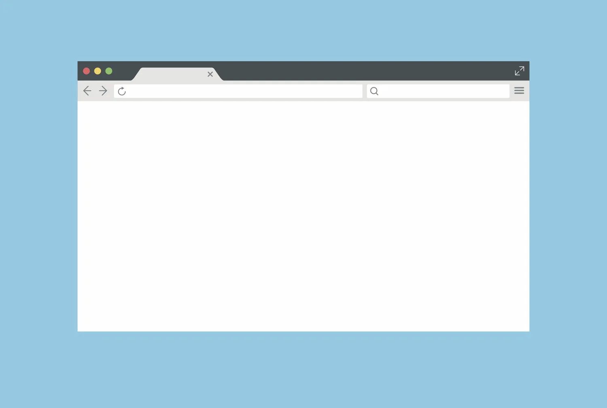

Илья Степанов

url - ссылка на открываемый ресурс
target - имя контекста. Если контекста с таким именем нет, то открывается новое окно. (Можно использовать ключевые слова аттрибута target у <a>)
features - Строка, содержащая список параметров окна, разделенных запятыми, в формате name=value.
window.open();window.open('https://itmo.ru');for (let i = 0; i < 100; i++) {
window.open("https://itmo.ru");
}Всплывающее окно блокируется в том случае, если вызов window.open произошёл не в результате действия посетителя
Исключения: